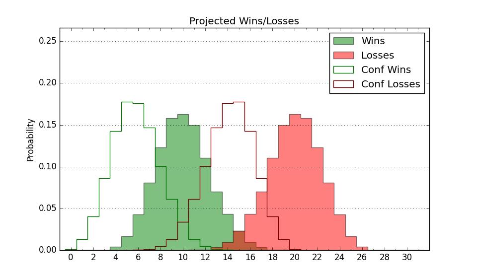

| Home | Game Probabilities | Conferences | Preseason Predictions | Odds Charts | NCAA Tournament |
| City: | San Jose, California | |
| Conference: | Mountain West (4th)
| |
| Record: | 0-1 (Conf) 3-6 (Overall) | |
| Ratings: | Comp.: -3.4 (193rd) Net: -5.3 (217th) Off: 106.1 (152nd) Def: 111.3 (289th) SoR: 0.0 (201st) |
| Remaining | ||||||
|---|---|---|---|---|---|---|
| Date | Opponent | Win Prob | Pred. | |||
| 12/14 | Cal Poly (174) | 61.5% | W 79-76 | |||
| 12/21 | Kennesaw St. (179) | 62.3% | W 77-73 | |||
| 12/28 | Boise St. (29) | 14.4% | L 68-80 | |||
| 12/31 | Colorado St. (116) | 46.4% | L 68-69 | |||
| 1/4 | @ UNLV (105) | 17.6% | L 66-76 | |||
| 1/7 | Utah St. (35) | 16.1% | L 69-81 | |||
| 1/11 | @ Air Force (235) | 43.6% | L 65-67 | |||
| 1/14 | New Mexico (75) | 31.1% | L 75-81 | |||
| 1/18 | @ Nevada (41) | 5.9% | L 60-78 | |||
| 1/25 | Wyoming (167) | 60.5% | W 71-69 | |||
| 1/28 | @ San Diego St. (39) | 5.6% | L 59-77 | |||
| 2/1 | Air Force (235) | 72.5% | W 69-63 | |||
| 2/4 | @ Fresno St. (236) | 43.9% | L 72-74 | |||
| 2/7 | @ Boise St. (29) | 4.7% | L 64-84 | |||
| 2/11 | San Diego St. (39) | 16.9% | L 63-73 | |||
| 2/15 | Nevada (41) | 17.7% | L 64-74 | |||
| 2/18 | @ Utah St. (35) | 5.3% | L 65-85 | |||
| 2/22 | @ Wyoming (167) | 31.0% | L 67-73 | |||
| 2/25 | UNLV (105) | 42.1% | L 70-72 | |||
| 3/4 | @ Colorado St. (116) | 20.3% | L 64-74 | |||
| 3/8 | Fresno St. (236) | 72.7% | W 76-69 | |||
| Previous | Game Score | |||||
| Date | Opponent | Win Prob | Result | Off | Def | Net |
| 11/4 | Western Illinois (318) | 85.3% | L 55-59 | -22.2 | 0.3 | -21.8 |
| 11/8 | (N) Pacific (278) | 67.1% | L 67-80 | -19.2 | -11.3 | -30.6 |
| 11/10 | @Hawaii (226) | 41.7% | L 69-80 | 9.4 | -11.7 | -2.3 |
| 11/17 | UC Santa Barbara (100) | 41.0% | L 59-64 | -9.1 | 1.7 | -7.4 |
| 11/20 | @USC (86) | 13.3% | L 68-82 | 8.2 | -15.4 | -7.2 |
| 11/25 | (N) UTEP (158) | 43.0% | W 71-65 | 1.5 | 9.4 | 10.9 |
| 11/26 | (N) UNC Greensboro (125) | 33.3% | W 69-64 | 3.4 | 9.5 | 12.9 |
| 11/27 | (N) Long Beach St. (296) | 69.7% | W 82-66 | 15.1 | -4.9 | 10.2 |
| 12/4 | @New Mexico (75) | 11.7% | L 77-83 | 14.8 | 1.9 | 16.7 |
| Stats & Trends | |||||
|---|---|---|---|---|---|
| Current | Day | Week | Month | Season | |
| Composite | -3.4 | +0.1 | +2.3 | -3.8 | -4.2 |
| Comp Rank | 193 | +5 | +30 | -49 | -52 |
| Net Efficiency | -5.3 | +0.2 | +4.2 | +9.3 | -- |
| Net Rank | 217 | -3 | +51 | +12 | -- |
| Off Efficiency | 106.1 | +0.2 | +2.9 | +16.1 | -- |
| Off Rank | 152 | -- | +36 | +115 | -- |
| Def Efficiency | 111.3 | -0.0 | +1.3 | -6.8 | -- |
| Def Rank | 289 | +3 | +12 | -150 | -- |
| SoS Rank | 172 | +9 | +100 | +77 | -- |
| Exp. Wins | 10.0 | +0.1 | +0.7 | -2.6 | -3.8 |
| Exp. Conf Wins | 5.8 | +0.1 | +0.6 | -1.4 | -1.6 |
| Conf Champ Prob | 0.0 | +0.0 | +0.0 | -0.5 | -0.8 |

| Advanced Stats | ||
|---|---|---|
| Stat | Value | Rank |
| Off Eff FG % | 0.495 | 206 |
| Off Ast Ratio | 0.132 | 245 |
| Off ORB% | 0.259 | 239 |
| Off TO Rate | 0.133 | 81 |
| Off FT Ratio | 0.369 | 104 |
| Def Eff FG % | 0.528 | 247 |
| Def Ast Ratio | 0.169 | 323 |
| Def ORB% | 0.278 | 171 |
| Def TO Rate | 0.126 | 308 |
| Def FT Ratio | 0.316 | 145 |